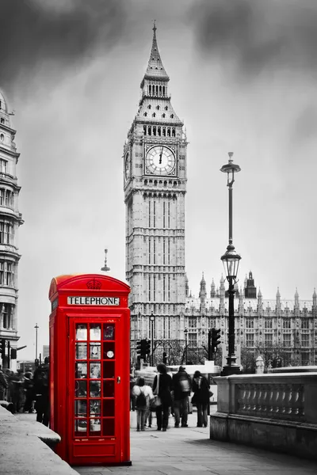

Roman London
Despite the evidence of scattered Brythonic settlements in the area, the first major settlement was founded by the Romans about four years after the invasion of 43 CE. This only lasted until about 61 CE, when the Iceni tribe led by Queen Boudica stormed it and burnt it to the ground.[47]In 1993, remains of a Bronze Age bridge were found on the south foreshore upstream from Vauxhall Bridge. This either crossed the Thames or reached a now-lost island in it.
In 2010, foundations of a large timber structure, dated to 4800–4500 BCE, were found on the Thames's south foreshore downstream from Vauxhall Bridge.The Vikings applied Danelaw over much of eastern and northern England, its boundary running roughly from London to Chester as an area of political and geographical control imposed by the Viking incursions formally agreed by the Danish warlord, Guthrum and the West Saxon king Alfred the Great in 886. The Anglo-Saxon Chronicle records that Alfred "refounded" London in 886. Archaeological research shows this involved abandonment of Lundenwic and a revival of life and trade within the old Roman walls. London then grew slowly until a dramatic increase in about 950. London is the capital and largest city of England and the United Kingdom with a total population of 9,002,488. It stands on the River Thames in south-east England at the head of a 50-mile (80 km) estuary down to the North Sea, and has been a major settlement for two millennia. The City of London, its ancient core and financial centre, was founded by the Romans as Londinium and retains boundaries close to its medieval ones.
